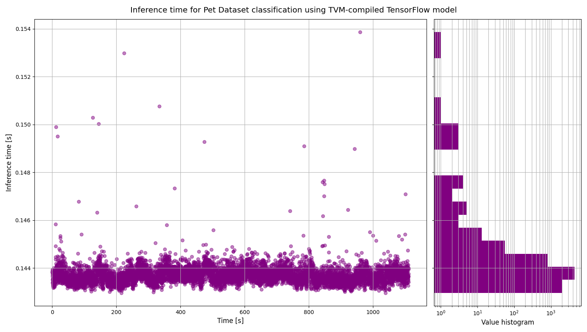

Sample autogenerated report¶
This section contains the CI sample report for running inference on compiled model.
The CI setup is as follows:
Environment: Github Actions
Task: dog and cat breeds classification based on the Oxford-IIIT Pet Dataset,
Training framework: TensorFlow,
Compiler framework: TVM,
Target: CPU (using LLVM target on TVM).
Inference performance metrics¶
Note
This section was generated using:
python -m kenning.scenarios.inference_tester \
kenning.modelwrappers.classification.tensorflow_pet_dataset.TensorFlowPetDatasetMobileNetV2 \
kenning.compilers.tvm.TVMCompiler \
kenning.runtimes.tvm.TVMRuntime \
kenning.datasets.pet_dataset.PetDataset \
./build/local-cpu-tvm-tensorflow-classification.json \
--model-path \
./kenning/resources/models/classification/tensorflow_pet_dataset_mobilenetv2.h5 \
--model-framework \
keras \
--target \
llvm \
--compiled-model-path \
./build/compiled-model.tar \
--opt-level \
3 \
--save-model-path \
./build/compiled-model.tar \
--target-device-context \
cpu \
--dataset-root \
./build/pet-dataset/ \
--inference-batch-size \
1 \
--download-dataset \
--verbosity \
INFO
python -m kenning.scenarios.render_report \
inferencetest/local-cpu-tvm-tensorflow-classification.json \
Pet Dataset classification using TVM-compiled TensorFlow model \
docs/source/generated/local-cpu-tvm-tensorflow-classification.rst \
--img-dir \
docs/source/generated/img \
--report-types \
performance \
classification \
--root-dir \
docs/source/
Note
Input JSON:
{
"dataset": {
"type": "kenning.datasets.pet_dataset.PetDataset",
"parameters": {
"classify_by": "breeds",
"image_memory_layout": "NHWC",
"dataset_root": "build/pet-dataset",
"inference_batch_size": 1,
"download_dataset": true
}
},
"model_wrapper": {
"type": "kenning.modelwrappers.classification.tensorflow_pet_dataset.TensorFlowPetDatasetMobileNetV2",
"parameters": {
"model_path": "kenning/resources/models/classification/tensorflow_pet_dataset_mobilenetv2.h5"
}
},
"runtime": {
"type": "kenning.runtimes.tvm.TVMRuntime",
"parameters": {
"save_model_path": "build/compiled-model.tar",
"target_device_context": "cpu",
"target_device_context_id": 0,
"input_dtype": "float32",
"runtime_use_vm": false,
"use_json_at_output": false,
"io_details_path": null,
"disable_performance_measurements": true
}
},
"optimizers": [
{
"type": "kenning.compilers.tvm.TVMCompiler",
"parameters": {
"model_framework": "keras",
"target": "llvm",
"target_host": null,
"opt_level": 3,
"libdarknet_path": "/usr/local/lib/libdarknet.so",
"compile_use_vm": false,
"output_conversion_function": "default",
"quantization_details_path": null,
"compiled_model_path": "build/compiled-model.tar"
}
}
]
}
Inference time¶

Fig. 1 Inference time¶
First inference duration (usually including allocation time): 0.14810067300004448,
Mean: 0.14371921757423178 s,
Standard deviation: 0.00042388968609240727 s,
Median: 0.14367649099995106 s.